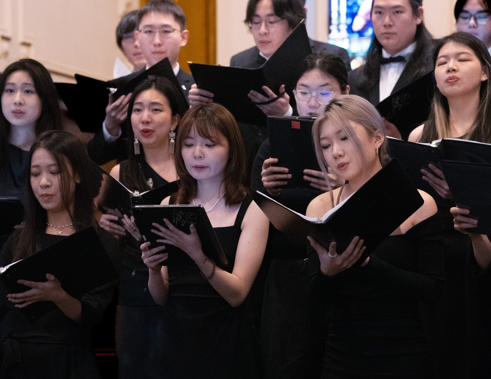
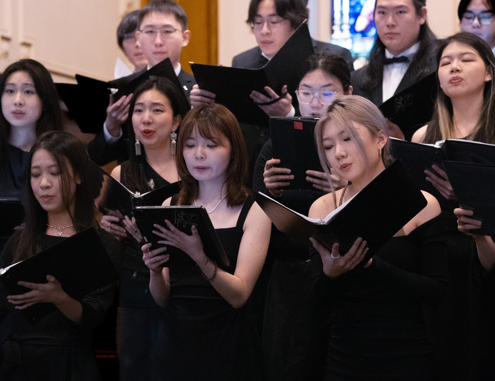

About Me🌸
Thanks for noticing me in this colorful world.
I love exploring the world and communities.
—it's how I discover fresh ways to design experiences that truly connect with people.
Growing Through Experience
Learning Service Design in Real Life
2017–2020
At Queens Chinese Student Association, I took on leadership roles that gave me my first taste of service design. I learned how to align stakeholders, organize large-scale events, and improve services through trial and error. This experience showed me how to design not just for individual users, but for entire communities.

Empathy on Stage, Systems Backstage
2019–now
In theater, I practiced empathy as an actor by stepping into different perspectives. As an assistant stage manager, I kept the backstage running smoothly—coordinating people, timing, props, and cues with PM-like precision. It felt just like building a service blueprint, where every detail matters to deliver a seamless audience experience.
Finding Harmony in Leadership
2023–now
With Allegro Choir, I sing as a soprano while leading all marketing efforts. Beyond managing rehearsals and campaigns, I created posters, programs, and digital assets—bringing in my UI skills and graphic design sense to make our message visually engaging. This experience taught me how to align individual voices with group harmony, and strengthened my ability in facilitation, inclusive communication, and visual storytelling—all essential in service design and UX.
I designed both the print program to showcase my graphic design & layout skills, and a digital version in Figma to highlight my UI/UX and interactive thinking.
🎨 View Program (PDF) 💻 Digital Program (Figma)
 

Beyond Work: Passions that Shape My UX
Creativity & Storytelling
From theater to Kunqu and live singing, I explore how stories move people — a skill I bring into narrative-driven UX.
Leadership & Collaboration
Running QCSSA and leading Allegro Choir marketing taught me stakeholder management and team alignment, just like service design projects.
Well-being & Exploration
Cycling, frisbee, and calligraphy keep me balanced, curious, and focused — fueling the patience and exploration mindset essential in UX.
From leading communities, to staging theater, to singing in harmony — every chapter of my journey has been about understanding people and creating connections. These experiences remind me that good UX is more than interfaces: it's about weaving empathy, collaboration, and storytelling into meaningful services.
I carry this mindset into every project — blending curiosity, creativity, and systems thinking to design not just products, but thoughtful experiences. If this resonates with you, you’ll find the footer just below 👇 — I’d love to connect.